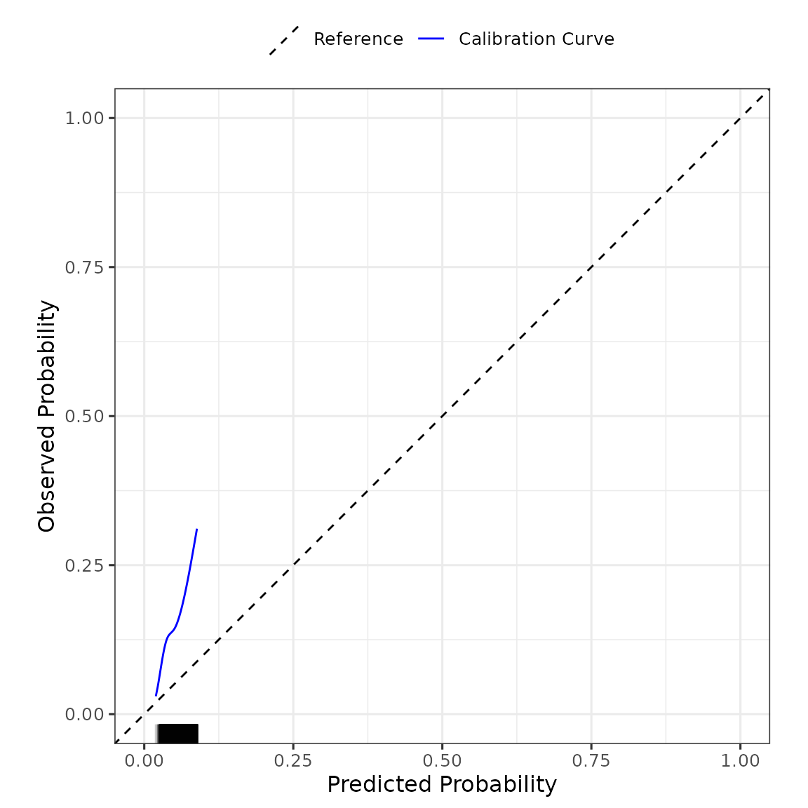

Example of Validating a Model that Includes Spline Terms
Glen P. Martin, PhD; David Jenkins, PhD; Matthew Sperrin, PhD
Source:vignettes/predRupdate_splineIllustration.Rmd
predRupdate_splineIllustration.RmdPreamble
A primary purpose of the predRupdate package is to
externally validate an existing (previously published) clinical
prediction model (CPM) on a new dataset. Sometimes the existing CPMs
will include spline terms as predictor variables for non-linear
associations. The aim of this vignette is to overview how to use
predRupdate to validate such a model, and is intended
to supplement other vignettes in the package
(vignette("predRupdate")).
Data
The data, called SYNPM, used throughout this vignette are available within the predRupdate package. See “?SYNPM” for details of these data. In short, the data and models included in SYNPM are synthetic, but for the purposes of this vignette, we imagine that one is interested in predicting someone’s risk of mortality after surgery. Data are available on 20000 people, which records each individuals age, gender, smoking status, diabetes status, and Creatinine value at the time of surgery. The data includes a binary outcome, Y, indicating if the patient died within 1 month.
For this vignette, we imagine a situation where a CPM has previously been developed (in another dataset) to predict the risk of mortality within 1 month of surgery, and we wish to validate this model in our dataset to test the predictive performance (e.g., an external validation study). The existing model was a logistic regression model, with the following predictor variables and coefficients (log-odds ratios) reported:
| Coefficient | |
|---|---|
| (Intercept) | -3.99500 |
| Age spline1 | 0.72918 |
| Age spline2 | 0.06249 |
| Age spline3 | 1.67003 |
| Age spline4 | 0.75348 |
| SexM | 0.47859 |
The existing model included Age as a B-spline (of degree 3) with 4 degrees of freedom. The coefficient for each basis function is given in the table above. The existing model reported that the internal knot location was 50.09 years, with boundary knot locations of 36 and 64 years.
We now show how one can use this reported information to externally validate the model in new data using predRupdate package.
External Validation
The first step in using predRupdate to validate this
model is to input the model information. We start by creating a
data.frame of the model coefficients, with the columns being the
predictor variable names. This information is then passed into the
pred_input_info() function to input the information about
the existing model. See pred_input_info() for details.
# create a data.frame of the model coefficients, with columns being variables
coefs_table <- data.frame("Intercept" = -3.995, #the intercept needs to be named exactly as given here
"Age_spline1" = 0.72918,
"Age_spline2" = 0.06249,
"Age_spline3" = 1.67003,
"Age_spline4" = 0.75348,
"SexM" = 0.47859)
#pass this into pred_input_info()
Existing_Logistic_Model <- pred_input_info(model_type = "logistic",
model_info = coefs_table)
summary(Existing_Logistic_Model)
#> Information about 1 existing model(s) of type 'logistic'
#>
#> Model Coefficients
#> =================================
#> Intercept Age_spline1 Age_spline2 Age_spline3 Age_spline4 SexM
#> 1 -3.995 0.72918 0.06249 1.67003 0.75348 0.47859
#>
#> Model Functional Form
#> =================================
#> Age_spline1 + Age_spline2 + Age_spline3 + Age_spline4 + SexMNext, we need to apply the B-spline function (exactly as originally published for the existing model under validation) to our dataset. We can do this in R using the splines package, and passing in the knot locations as reported by the existing model development:
Age_spline <- splines::bs(SYNPM$ValidationData$Age,
knots = c(50.09),
Boundary.knots = c(36, 64))
head(Age_spline)
#> 1 2 3 4
#> [1,] 0.3274396 0.4868261 0.18474109 0.0000000000
#> [2,] 0.1739705 0.4823196 0.34237812 0.0013318088
#> [3,] 0.1847176 0.4873202 0.32718198 0.0007802354
#> [4,] 0.2026126 0.4936276 0.30350207 0.0002577483
#> [5,] 0.1404779 0.4598862 0.39461373 0.0050222206
#> [6,] 0.5795287 0.2856465 0.04120013 0.0000000000We can see that this creates the basis functions, which we add to out validation dataset (taking care to name these columns the same as how the corresponding coefficients for each basis function is specified in above):
ValidationData <- SYNPM$ValidationData
ValidationData$Age_spline1 <- Age_spline[,1]
ValidationData$Age_spline2 <- Age_spline[,2]
ValidationData$Age_spline3 <- Age_spline[,3]
ValidationData$Age_spline4 <- Age_spline[,4]Now, we can validate this model in our validation dataset by using
pred_validate() as normal (see
vignette("predRupdate")):
validation_results <- pred_validate(x = Existing_Logistic_Model,
new_data = ValidationData,
binary_outcome = "Y")
summary(validation_results) #use summary() to obtain a tidy output summary of the model performance
#> Calibration Measures
#> ---------------------------------
#> Estimate Std. Err Lower 95% Confidence Interval
#> Observed:Expected Ratio 2.9952 0.0188 2.8869
#> Calibration Intercept 1.2097 0.0204 1.1697
#> Calibration Slope 1.0555 0.0693 0.9197
#> Upper 95% Confidence Interval
#> Observed:Expected Ratio 3.1076
#> Calibration Intercept 1.2496
#> Calibration Slope 1.1913
#>
#> Also examine the calibration plot, if produced.
#>
#> Discrimination Measures
#> ---------------------------------
#> Estimate Std. Err Lower 95% Confidence Interval
#> AUC 0.5854 0.0058 0.574
#> Upper 95% Confidence Interval
#> AUC 0.5968
#>
#>
#> Overall Performance Measures
#> ---------------------------------
#> Cox-Snell R-squared: -0.1282
#> Nagelkerke R-squared: -0.23
#> Brier Score: 0.1295
#>
#> Also examine the distribution plot of predicted risks.
validation_results$flex_calibrationplot